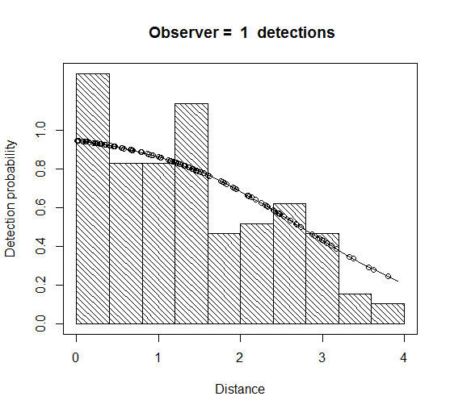
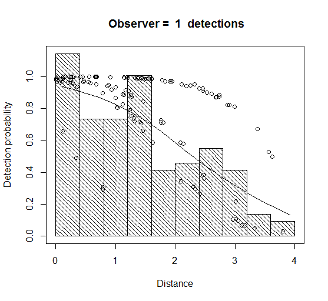

Analysis of double platform data
Exercise solution for both software platforms
These solutions are applicable to both the Distance for Windows and mrds R versions.
Golf Tee Survey
This example dataset is discussed in Chapter 6 of Buckland et al. (2004) and results for the trial setup are given in Table 6.5 (page 160). Results are also available in the Distance windows project GolfteesSolutions.zip.
(Note that there are differences in the measures of precision between the Distance for Windows version and the mrds in R version because the number of transect lines (samples) differed between the two sets of data. Other statistics are the same.)
Estimation of p; FI - MR dist and FI - MR dist+size+sex+exp
The model with more covariates is modelling more of the heterogeneity in detection probability and so should be less biased. This seems to be the case: the estimated N for the model “FI – MR dist + size + sex + exp” is closer to truth than the “FI – MR dist” (recall that there were really 760 individual tees).
There is some evidence of unmodelled heterogeneity in both cases (noticeably more so with the ‘FI – MR dist’ in that the fitted detection function for observer 1 declines slower than the histogram as distance increases (Figure 1). This is less the case for the ‘FI – MR dist + size + sex + exp’ model – not surprisingly, because it models the effect of more variables causing the heterogeneity.
Both are still somewhat negatively biased, but the 95% confidence intervals do include the true value1. Both models are reasonable fits to the data (non-significant chi-squares, Cramer-von Mises and KS tests) – although the fit is noticeably worse in the case of the ‘FI – MR dist’ model. The ‘dist + size + sex + exp’ model has a much lower AIC and so is to be preferred on that basis.
Specifying new models
I tried two models with interaction terms (although many other models could have been tried) – one with a sex times exposure interaction (‘FI – MR dist + sex x exp’) and one with a three-way interaction between distance, sex and exposure (‘FI – MR dist x sex x exp’). The former had a slightly lower AIC than the model with the 3-way interaction. The estimated N from this model was also closer to truth (Table 1).
Point independence
The point independence model with just Distance in the MR model (‘PI – MR dist DS hn’) had a slightly lower AIC than the corresponding full independence model (‘FI – MR dist’), however, the abundance estimate is much closer to truth (Table 1). We can expect the bias to be smaller for the point independence model because the assumption of independence only on the trackline is weaker than assuming independence everywhere.
Comparing the previous best FI model (‘FI – MR dist + sex x exp’) with the equivalent PI model with no covariates in the DS part (‘PI – MR dist + sex x exp DS hn’), the former had a lower AIC, and similarly for a model with no interactions in the MR model (model ‘PI – MR dist + sex + exp DS hn’). The difference in bias between FI and PI models is less for these models with more covariates, as there is less unmodelled heterogeneity that can contribute to non-independence away from the trackline (i.e., violation of the independence assumption of the FI model).
Adding sex as a covariate into the DS model (‘PI – MR dist + sex + exp DS hn sex’) produced a model with the lowest AIC yet, and also the closest estimate (695) to true N. This model was found to have lowest AIC in a comparison of 40 models in Chapter 6 (Buckland et al., 2004, Table 6.5). The estimate is still less than the true N indicating, perhaps, some unmodelled heterogeneity on the trackline (or perhaps just bad luck – remember that this is only one survey).
Was this complex modelling worthwhile? In this case, the estimated p(0) for the best model was 0.96. If we ran a conventional distance sampling analysis (i.e. single platform), pooling the data from the two observers, we should get a very robust estimate of N. We did this in the final analysis in the solutions Distance project GolfteeSolutions.zip.
- To do this, we selected only records where Observer = 1 regardless of whether they were seen by that observer or not – i.e. we use data from both observers combined, who will have a higher p(0) than either of them on their own.
The estimate of N from the CDS analysis is 706 – slightly closer to truth than our best MRDS model. (You can do the same thing in the mrds package in R, by specifying in the ddf function method = “ds”. Once you have a fitted detection function you can then pass this into the dht function to get an abundance estimate. The resulting estimate of abundance of clusters is identical.
- assuming you used the same half-normal key function we used in the Distance project; the estimate of abundance of individual is slightly different because Distance for Windows uses cluster size regression by default, while
ddfdoes not.
Table 1 Summary of the fitted models, AIC and estimated individual abundance, N.
| Model name | AIC | Estimated N |
|---|---|---|
| FI-MR dist | 452.81 | 593 |
| FI-MR dist + size + sex + exp | 407.40 | 642 |
| FI-MR dist + sex * exp | 403.80 | 682 |
| FI-MR dist * sex * exp | 404.46 | 679 |
| PI-MR dist DS hn | 452.03 | 688 |
| PI-MR dist + sex * exp DS hn | 406.34 | 675 |
| PI-MR dist + sex + exp DS hn | 406.04 | 666 |
| PI-MR dist + sex + exp DS hn sex | 399.26 | 695 |
Figure 1 Fitted detection function using the models ‘FI-MR dist’ (left plot) and ‘FI-MR dist+size+sex+exp’ (right plot).
 
Crabeater Seal Survey
The solution is divided into Distance for Windows and the R package Distance sections.
Distance for Windows
- The MCDS goodness-of-fit statistics all indicate adequate fit (none are significant at the 5% level) and the abundance estimate is not far from that for the PI model used in the paper: 3,820 with CI (3,168; 4,606) vs 3,969 with CI (3,274; 4,812) from the MRDS model. Use of an MCDS model results in an estimate only 4% lower than that from the MRDS model and the CVs for the two models are very similar - so the MCDS model seems pretty adequate.
Why is this? It is because the MRDS estimate of p(0) for both platforms combined is 0.988 – i.e. the conventional distance sampling assumption that p(0) is 1 is very nearly satisfied.
- The full-independence (FI) MRDS analysis is not adequate. The very poor fit to the combined distance data is clear from the plots headed “Detection Probability 1”, “Detection Probability 2” and “Detection Probability 3”, which show the distribution of Obs1, Obs2 and combined Obs detections, with the Obs 1, Obs 2 and combined detection functions overlaid. It can also be clearly seen from the Q-Q plot and the Kolmogorov-Smirnov goodness-of-fit test statistic.
The plot headed “Detection Probability 4” shows the duplicates and the duplicated detection function. The plots headed “Detection Probability 5” and “Detection Probability 6” are the conditional detection functions for each observer overlaid on the respective duplicate proportions.
Notice that the conditional detection function fits are pretty good. So the model seems adequate for modelling the conditional probability of one observer detecting a group, given the other observer detected it, but not for the unconditional probability of detecting a group (which is what we want to estimate). This implies that there is something about detected groups that tends to make them more detectable than other groups (i.e., some unmodelled heterogeneity). So treating the conditional detection functions as if they applied to undetected groups will lead to positive bias in estimating their detection probability and negative bias in estimating abundance.
The severe negative bias in the abundance estimate is apparent from a comparison of the FI and PI estimates: the former is 2,509 with CI (2,070; 3,041), which is substantially lower than even the MCDS estimate, while the latter is 3,969 with CI (3,274; 4,812).
Note that PI estimators cannot be lower than the corresponding CDS or MCDS estimators.
One final note: FI abundance estimates will not in general be lower than MCDS estimates, even when the FI assumption fails, as it has here. In particular, when p(0) is low, the FI estimator is likely to be less biased than the MCDS estimator. In this example, p(0) is very close to 1, so the MCDS estimator has small bias.
Distance package in R
Fitting a simple MRDS model (i.e. DS half-normal key with MR model distance only) gives an MRDS estimate of p(0) for both platforms combined of 0.988. The \(p(0)\) for each observer team was 0.89. Note that the estimate is the same for each team because observer was not included in the MR model.
Crabeater seals with MCDS
The detection function model with the lowest AIC includes side of plane and visibility – this is the distance sampling model used in Borchers et al. (2006) and Southwell et al. (2007).
| Formula | AIC |
|---|---|
| No covars | 22304.01 |
| side | 22304.74 |
| vis | 22311.34 |
| side + vis | 22300.13 |
From the simple MRDS analyses, we see that the conventional distance sampling assumption, that p(0) is 1, is very nearly satisfied – and so in this case an MCDS analysis may have been adequate. However, a double platform survey and analysis were required to establish this.
References
Footnotes
Except for the model FI – MR dist fitted in R. The 95% CI are (478 – 736).↩︎